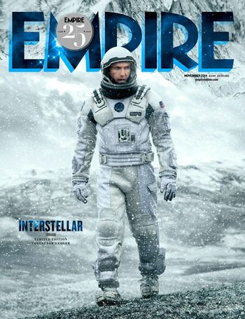

Independientemente de los resultados que acabe arrojando en taquilla o de la valoración crítica que termine amasando, es indiscutible que "Interstellar" es una de las películas más esperadas del año. Principalmente por la personalidad de su director, Christopher Nolan, especialista en deslizar artefactos de fantasía seria en los engranajes de la maquinaria de los blockbusters (la densa "Inception" o la solemne trilogía de "Dark Knight" son los ejemplos más claros). Una personalidad que sumerge en un secretismo de alto calibre todos sus proyectos y que obliga a que la aproximación a sus películas por estrenar sean meras conjuturas y sobreanálisis de trailers, teaser-pósters y demás migajas de marketing.
DIRECTOR:
☸ Christopher Nolan
ACTORES Y ACTRICES :
☸ Matthew McConaughey - Cooper
☸ Anne Hathaway - Brand
☸ Michael Caine - Profesor Brand
☸ John Lithgow - Donald
☸ Jessica Chastain - Murph
☸ Casey Affleck - Tom
☸ Mackenzie Foy - Murph Jeune
☸ Wes Bentley - Doyle
